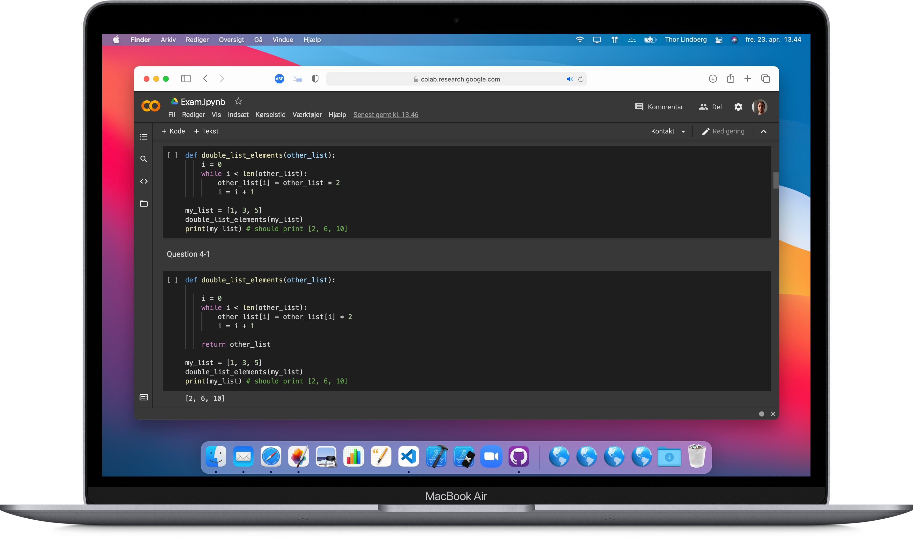
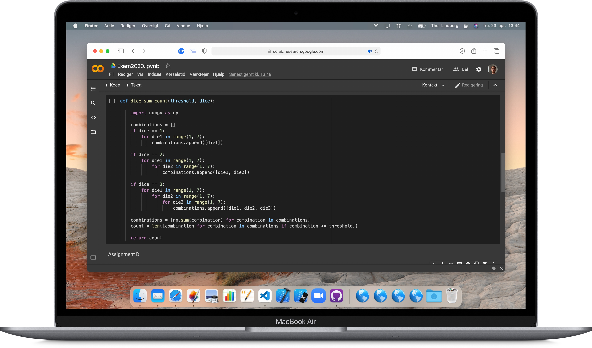

Introduction to Programming
with Python and Jupyter
Explore the projects

with Python and Jupyter
Introduction to Programming
at IT-University in Copenhagen
The course provides students with a basic understanding of computational thinking and programming both for their own future use and for their ability to collaborate with experienced programmers and software developers.
The students will learn about the concept of computational thinking and get a hands-on introduction to programming using the Python programming language.
Programming and computational thinking are basic primitives in today’s IT world. This course provides a basic and hands-on introduction into these topics. The programming language is going to be Python. After taking the course, students have a solid technical foundation with regard to programming.
The students will learn about the concept of computational thinking and get a hands-on introduction to programming using the Python programming language.
Programming and computational thinking are basic primitives in today’s IT world. This course provides a basic and hands-on introduction into these topics. The programming language is going to be Python. After taking the course, students have a solid technical foundation with regard to programming.
Exam code
notebook.ipynb
Mathematical modelling,
created with Python
Explore the projects

created with Python
Introduction to Programming and Data Processing
at DTU
The use of computers for technical/mathematical computations and simulations is central for many areas at DTU, and it is therefore necessary to have a working knowledge of computer programming. In the course students will learn about basic concepts and techniques in programming, as well as how to write programs with a focus on computations with technical/engineering applications. The participants will be able to design and develop well-structured smaller programs, test the design and program, read various data formats, and visualize the results graphically. One of the programming languages Matlab, Python or R is used.
Project 1
notebook.ipynb
Project 2
notebook.ipynb
Exam code
notebook.ipynb
Analyzing healthcare data,
with the power of Python
View the report
with the power of Python

Applied Programming for Biosciences
at Copenhagen University
In this project, an anonymized healthcare dataset from the Central Person Registry (CPR) was processed with the programming language Python, producing a rich set of analytical output in tabular format. These tables reveal generational trends of geneological traits, including height, weight, and eye color. In addition, general statistics within the dataset were computed, including age-gender distributions, generations, and blood donation between children, parents and grandparents.
The methods produced with Python were designed to be applicable to any dataset of similar structure to the analyzed dataset. Reusability and flexibility were values emphasized during the construction of the code and its flow, resulting in Python code that is efficient and easily readable.
The methods produced with Python were designed to be applicable to any dataset of similar structure to the analyzed dataset. Reusability and flexibility were values emphasized during the construction of the code and its flow, resulting in Python code that is efficient and easily readable.
Output
comma-seperated value (CSV) files
Python code
methods.py
Jupyter code
notebook.ipynb
Visualizing statistics,
with the power of Python
Download python project
with the power of Python

Individual course
at Copenhagen University
Danmarks Statistisk (Denmark's Statistics) provides a large amount of datasets for various measurements on the Danish population.
Based on Python, this series of functions reads a dataset of an applicable structure, and provides several options for statistical analysis.
Analyzed datasets can be visualized as plots, by selecting a visualization option during analysis.
Based on Python, this series of functions reads a dataset of an applicable structure, and provides several options for statistical analysis.
Analyzed datasets can be visualized as plots, by selecting a visualization option during analysis.


Python code
functions.py
Jupyter code
notebook.ipynb